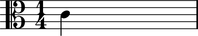

The Abjad _Clef class
The Abjad _Clef class models clefs.
Public interface
Dictionaries
Attributes
abjad> note = Note(0, (1, 4))
abjad> note.clef.effective.format '\\clef treble'

Read-only attribute defined here.
Returns LilyPond staffline count of middle C position.
abjad> note = Note(0, (1, 4))
abjad> note.clef.effective.middleCPosition -6

Read / write attribute defined here.
Return LilyPond clef name string.
Accepts LilyPond clef name string, None.
abjad> note = Note(0, (1, 4)) abjad> note.clef = 'alto'
abjad> note.clef.name 'alto'
Dictionaries
Read-only attribute defined here.
Returns LilyPond staff line position of middle C for self.
Accepts LilyPond clef name string.
abjad> note = Note(0, (1, 4))
abjad> note.clef.effective.clefNameToMiddleCPosition['bass'] 6
Overloads
Read-only attribute defined here.
Returns True when self.name equals arg.name, otherwise False.
abjad> n1 = Note(0, (1, 4)) abjad> n1.clef = 'alto' abjad> n2 = Note(0, (1, 4)) abjad> n2.clef = 'treble'
abjad> n1.clef == n2.clef False
abjad> note = Note(0, (1, 4))
abjad> note.clef.effective
Clef('treble')
abjad> note = Note(0, (1, 4)) abjad> str(note.clef.effective) 'treble'